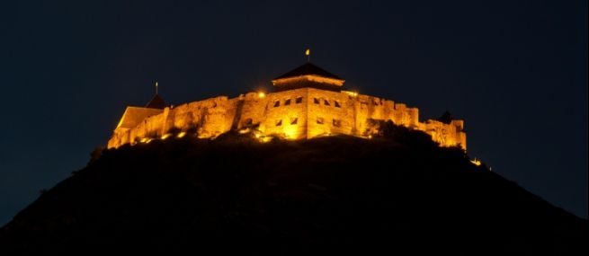
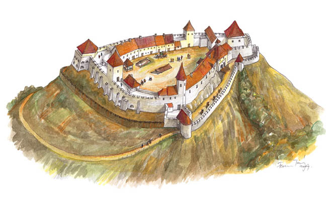

A Sümegi Vár története
"A vár messziről, a körkörös irányból érkezőnek megmutatta magát, megmutatta erejét. Magabiztosan, egyértelműen.....Naponta többször láthatom. Szükségem van rá, hogy lássam. Nemcsak azért, mert szépségével erőt, bátorítást ad, a diákévek eleven emlékével, hanem főképpen azért, mert jelkép. Az emberi teljesítmény, az emberi jelenlét folyamatosságának, történelmi léptékének megjelenítője. Magam, magunk fölé emel. A szó szoros értelmében magasan tartja a mércét."
Dr.Högyész László:Sümeg évszázadai , 1989. Veszprém
A Sümegi Vár az ország egyik legszebb, viszonylag épen megmaradt középkori erődje, amely a környezetéből magasan kiemelkedő kopár hegytetőre épült. A vár területileg három nagyobb egységből, a külső-, a belső és fellegvárból áll. Építése több korszakra osztható. Az 1260-as években épült meg a vár legrégebbi része, a fellegvár Öregtornyának alsó szintje, melyen egy fából készült emeleti toronyrész állhatott. Változás a 14. században az Anjou-királyok idején következett be. Ekkor került sor a vár szervezeti erősítése mellett a fellegvár falainak és az Öregtorony felső szintjének megépítésére, a meglévő épületek javítására.
A vár nagyobb bővítéseit a 15. század folyamán Gathalóczy Mátyás (1440-1457), Vetési Albert (1458-1486), majd ifjabb Vitéz János (1489-1499) püspökök idejében végezték. Először a kis vár előtti nagyobb méretű fennsíkot vették körül magas várfallal, nagy udvart alakítva ki. Vetési püspök tevékenysége alatt megépítették a Belső Kaputornyot, elkészült a vár déli szikláin a palota. Egy későbbi időszakra tehető a Külső kaputorony és a pártázatos, lőréses várfal építése. A kápolna kialakítását Vitéz János püspök nevéhez kapcsolhatjuk.
A következő nagyszabású építkezés azután indult, hogy Veszprém 1552-ben török kézre került, és a püspökség a sümegi várba menekült. A munkálatok Köves András püspök (1553-1568) és Ormányi Józsa várkapitány vezetésével folytak. Először a vár északi sarkán építettek egy kétszintes, nagyméretű ötszög alaprajzú bástyát, melyet a későbbiekben Köves püspökről neveztek el, majd átépítették a palotaszárnyat.

Széchenyi György püspök (1648-1658) nevéhez fűződik a sümegi vár püspöki székhellyé avatása és ő kezdeményezte a palotaszárny barokk stílusú átalakítását is.
Utódja, Sennyei István püspök (1659-1683) folytatta a vár építését, megerősítették a Külső kaputornyot, mellé magas bástya került, amely a püspök nevét viseli. A vár építésének története Széchenyi Pál püspökségével (1687-1710) zárul. Ekkor a javítások mellett újabb építkezések is folyhattak. A vár hanyatlása a következő század elején kezdődött. A Rákóczi szabadságharc után, 1713-ban felgyújtották, ettől kezdve a vár két és fél évszázadon át pusztulásnak volt kitéve.
1957-ben láttak hozzá a vár hét éven át tartó feltárásához és helyreállításához.A vár hosszú éeveken keresztül a Megyei Idegenforgalmi Hivatal kezelsésben állt, de az évek alatt elmaradt karbantartási munkák hiánya miatt 1988-ra a vár élet -, és balesetveszélyes állapotba került. Az akkori sümegi város vezetés , a Sümegi Tanács magánszemélyt keresett a vár üzemeltetésére.
1989-ben a Papp család jelentkezett a vár üzemeltetésére. Az első években megkezdték a romok eltakarítását, valamint az élet -, és balesetveszélyes helyek helyreállítását. A Országos Műemlékvédelmi Hivatallal engedélyével megkezdődtek a várban a felújítási munkálatok is. A vár tornyai új héjalást kaptak , a termek egyre több és több színvonalas kiállítással gazdagodtak. Köszönhetően a várban megrendezésre kerülő idegenforgalmi programoknak, valamint a folyamatos fejlesztéseknek a Sümegi Vár ma már az egyik legkedveltebb kirándulóhellyé vált a magyarországi turisták körében.